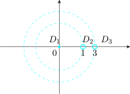
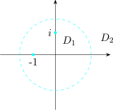

9.1 Series
Theorem 9.1 (Taylor’s Theorem). Let \(f(z)\) be analytic at a point \(z_0\), then the Taylor series expansion
of \(f(z)\) about \(z_0\) is given by
\[f(z) = \sum ^{\infty }_{n = 0} a_n (z - z_0)^n\]
where \(\,\displaystyle {a_n = \frac {f^n(z_0)}{n!} = \frac {1}{2\pi i}\int _{C_r}\frac {f(w)}{\big (w - z_0\big )^{n+1}}\,dw\,}\) for \(n= 0, 1 , 2,\cdots \)
The series converges in a disk \(\left |z - z_0\right | < R\) where \(R\) is the smallest distance from \(z_0\) to the singularity of \(f(z)\). The series is unique about \(z_0\).
Coefficients of Power Series
Let \(\displaystyle {f(z) = \sum ^{\infty }_{k = 0 }a_kz^k}\) where this power series has radius of convergence \(R>0\). Then
\[a_n = \frac {1}{2\pi i}\int _{C_r}\frac {f(z)}{z^{n+1}}\,dz\qquad (0\leq r< R,\,n\geq 0 )\]
\(C_r\) is a circle of radius \(r\) centered at \(0\) and positively oriented.
Proof. \begin {align*} \int _{C_r}\frac {f(z)}{z^{n + 1}}\,dz & = \int _{C_r}\frac {\sum \limits ^{\infty }_{k = 0}a_kz^k}{z^{n + 1}}dz\\\\ & = \int _{C_r}\Bigg (\sum ^{\infty }_{k= 0}a_k\,z^{k - n -1}\Bigg ) dz\\\\ & = \sum ^{\infty }_{k = 0}\int _{C_r}a_k\,z^{k - n -1}dz\quad \text {if}\quad k = n\\\\ & = 2\pi i a_n \end {align*}
So \(\quad \displaystyle {a_n = \frac {1}{2\pi i}\int _{C_r}\frac {f(z)}{z^{n + 1}}\,dz}\)
Let \(u_k(z) = a_kz^{k - n - 1}\quad , \quad u(z) = z^{-n - 1}f(z)\quad \) Then \(u(z) = \displaystyle {\sum ^{\infty }_{k = 0}u_k(z)}\) on \(z \in C_r^*\)
\[\left |u_k(z)\right | = M_k = \left |C_k\right |\, r^{k - n - 1}\]
and \(\displaystyle {\sum M_k}\) converges.
Proof. Fix \(z \in B(a: R)\) choose \(r\) such that \(\left |z - a\right | < r < R\).
Now by Cauchy’s integral formula
\[f(z) = \frac {1}{2\pi i}\int _{C_r}\frac {f(w)}{w - z}\,dw\quad \cdots \quad (**)\]
Since \(\left |z - a\right | < \left |w - a\right |\quad \forall w \in C_r\,,\)
\[\frac {1}{w - z} = \frac {1}{w - a}\Bigg [\frac {1}{1 - \Big (\frac {z - a}{w - a}\Big )}\Bigg ]\quad \cdots \quad (*)\]
\(\displaystyle {\Bigg [\frac {1}{1 - \Big (\frac {z - a}{w - a}\Big )}\Bigg ]}\) can be expanded as geometric series. So
\[\frac {1}{w - z} = \frac {1}{w - a}\sum ^{\infty }_{n = 0}\frac {(z - a)^n}{(w - a)^n}\]
from \((**)\) \begin {align*} f(z) & = \frac {1}{2\pi i}\int _{C_r}\frac {f(w)}{w - z}\,dw\\\\ & = f(z) = \frac {1}{2\pi i}\int _{C_r}f(w) \times \frac {1}{w - a}\times \sum ^{\infty }_{n = 0}\frac {(z - a)^n}{(w - a)^n}\,dw \end {align*}
On the compact set \(C_r\) the continuous function \(f\) is bounded so there is an \(M\) such that \[\left |\frac {(z - a)^n}{(w - a)^{n + 1}}\,f(w)\right |\leq \frac {M}{r}\,\frac {\left |z - a\right |^n}{r^n} = M_n\] The series \(\displaystyle {\sum M_n}\) converges \[f(z) = \sum ^{\infty }_{n = 0}\Bigg \{\underbrace {\Bigg [\frac {1}{2\pi i}\int _{C_r}\frac {f(w)}{(w - a)^{n+1}}\,dw}_{\frac {f^n(a)}{n!}\quad \text {By CIF}}\times (z - a)^n\Bigg \}\] by Cauchy’s integral formula for highere derivatives. □
Example 9.2. Determine the power series of the function \(\quad f(z) = z^6\sin 3z\).
The Taylor series for \(\sin 3z\) is \begin {align*} \sin (3z) & = \sum ^{\infty }_{n = 0} (-1)^n\,\frac {(3z)^{2n+1}}{(2n + 1)!}\quad \text {for}\quad z \in \mathbb {C}\\ \end {align*}
\begin {align*} \implies \quad f(z) & = z^6\sum ^{\infty }_{n = 0} (-1)^n\,\frac {(3z)^{2n + 1}}{(2n + 1)!}\\\\ & = \sum ^{\infty }_{n = 0}(-1)^n\,\frac {3^{2n + 1}\,z^{2n + 7}}{(2n + 1)!}\quad \text {for}\quad z \in \mathbb {C}\\\\ \end {align*}
□
Laurent Series
Definition 9.3. The series of the form
\[f(z) = \cdots + \frac {a_{-3}}{(z -z _0)^3} + \frac {a_{-2}}{(z - z_0)^2} + \frac {a_{-1}}{(z - z_0)} + a_0 + a_1 (z - z_0) + a_2 (z - z_0)^2 + a_3 (z -z_0)^3 + \cdots \]
is called Laurent series.
The constants are called Laurent coefficients. The coefficients \(a_0 , a_1, a_2, \cdots \) may be finite or infinite just as
the \(a_{-n}\)’s.
Setting \(\displaystyle {f_1(z) = \sum ^{\infty }_{n = 1} \frac {a_{-n}}{(z - z_0)^n}}\) and \(\displaystyle {f_2(z) = \sum ^{\infty }_{n = 0}a_n ( z - z_0)^n}\) the L-series becomes
\[f(z) = f_1(z) + f_2(z)\]
\(f_1(z)\) is called the principal part of the L-series expansion bout \(z_0\).
\(f_2(z)\) is the regular part of the L-series expansion about \(z_0\).
\(f(z)\) converges at \(z_0\) if both \(f_1(z)\) and \(f_2(z)\) converges in the disk \(\left |z - z_0\right | < R\) for some \(R\geq 0\).
Making the substitution \(z = \frac {1}{z - z_0}\) in \(f_1(z)\), we have \(\displaystyle {f_1(z) = \sum ^{\infty }_{n = 1} a_{-n} z^n}\) converges for \(\left |z\right | < L\)
\[\text {i.e}\quad \frac {1}{\left |z - z_0\right |} < L \implies \frac {1}{L} < \left |z - z_0\right |\]
Let \(r = \frac {1}{L}\), the \(f(z)\) converges in \(\quad r < \left |z - z_0\right |< R\).
L-series essentially help with investigating the behaviour of function near poles.
Example 9.4. Find the L-series expansion of \(f(z) = \frac {\cos z}{z^3}\) and \(g(z) = z^2\,e^{1/z}\)
\begin {align*} f(z) & = \frac {\cos z}{z^3} = \frac {1}{z^3}\,\sum ^{\infty }_{n = 0}\frac {(-1)^n\, z^{2n}}{(2n)!} \end {align*}
Recall the Taylor expansion of \(\cos z\) about \(z = 0\)
\(\displaystyle {\frac {d}{dz}\cos z = - \sin z}\)
\(\displaystyle {\frac {d^2}{dz^2}\cos z = -\cos z}\)
\(\displaystyle {\frac {d^3}{dz^3}\cos z = \sin z}\)
\(\displaystyle {\frac {d^4}{dz^4}\cos z = \cos z}\)
\[\text {Note that }\quad \frac {d^n}{dz^n}\cos z\Bigg |_{z = 0} = \begin {cases} 0 & \text {if}\quad n\quad \text {is odd}\\\\ \pm 1 & \text {if}\quad n \quad \text {is even}\\ \end {cases}\]
\[\therefore \quad a_n = \frac {(-1)^n}{(2n)!}\implies \cos z = \sum ^{\infty }_{n = 0} \frac {(-1)^n}{(2n)!}\,z^{2n}\]
\begin {align*} f(z) & = \frac {1}{z^3}\sum ^{\infty }_{n = 0} \frac {(-1)^n\,z^{2n}}{(2n)!}\\\\ & = \Big [\frac {1}{z^3} - \frac {1}{2!\,z}\Big ] + \Big [\frac {z}{4!} -\frac {z^3}{6!} + \frac {z^5}{8!}+ \cdots \Big ]\\\\ \end {align*}
\begin {align*} g(z) & = z^2 e^{1/z} = z^2\sum ^{\infty }_{n = 0} \frac {1}{n!\,z^n}\\\\ & = z^2 \Big [1 + \frac {1}{z} + \frac {1}{2!\,z^2} + \frac {1}{3!\,z^3}\cdots \Big ]\\\\ & = \underbrace {\Big [z^2 + z + \frac {1}{2!}\Big ]}_{\text {regular}} + \underbrace {\Big [\frac {1}{3!\,z} + \frac {1}{4\,z^2} + \frac {1}{5!\,z^3} + \cdots \Big ]}_{\text {principal}}\\ \end {align*}
Revise the Taylor expansions for \(\cos z , \sin z , \tan z, \ln z, e^z, \cosh z, \sinh z, \tanh z\).
Before we state the Laurent theorem, we have the following
- 1.
- The Laurent series can represent a wider range of functions than Taylor series.
- 2.
- Unlike Taylor series, L-series can be expanded about a point at which \(f(z)\) is not analytic.
- 3.
- There may be more than on Laurent series expansion about a point \(z_0\). Each with its own annular domain of convergence depending on the location of the points of which \(f(z)\) is not analytic.
- 4.
- Within its annular domain of convergence the Laurent series expansion is unique.
Theorem 9.5 (Laurent Theorem). Let \(f(z)\) be analytic in the annular domain \(r < \left |z - z_0\right | < R\) with its centre at \(z_0\) and \(r, R\) be such that \(0\leq r\leq R\). Then inside the domain \(f(z)\) is given by the convergent Laurent series \[f(z) = \sum ^{\infty }_{n =-\infty } a_n \, (z - z_0)^n\,,\quad \text {where}\quad a_n = \frac {1}{2\pi i}\int _{\Gamma }\frac {f(\zeta )}{(\zeta - z_0)^{n + 1}}\,d\zeta \,,\quad \text {for}\,n\in \mathbb {Z}\] and \(\Gamma \) is any circle centered at \(z_0\), with radius \(\rho \,,\quad r< \rho < R\) traversed in counter clockwise.
Proof. Fix \(z\) in the annulus and choose radii with \(r<\rho _1<\left |z-z_0\right |<\rho _2<R\). Let \(\Gamma _1,\Gamma _2\) be the circles of these radii, both positively oriented. Applying the Cauchy integral formula to the region between them — legitimate because \(f\) is analytic there — \[f(z)=\frac {1}{2\pi i}\int _{\Gamma _2}\frac {f(\zeta )}{\zeta -z}\,d\zeta -\frac {1}{2\pi i}\int _{\Gamma _1}\frac {f(\zeta )}{\zeta -z}\,d\zeta .\]
The outer circle gives the non-negative powers
On \(\Gamma _2\) we have \(\left |z-z_0\right |<\left |\zeta -z_0\right |\), so \[\frac {1}{\zeta -z}=\frac {1}{(\zeta -z_0)\left (1-\frac {z-z_0}{\zeta -z_0}\right )} =\sum _{n=0}^{\infty }\frac {(z-z_0)^n}{(\zeta -z_0)^{n+1}} ,\] the geometric series converging uniformly on \(\Gamma _2\). Integrating term by term gives \(\sum _{n\geq 0}a_n(z-z_0)^n\) with the stated coefficients.
The inner circle gives the negative powers
On \(\Gamma _1\) the inequality is reversed, \(\left |\zeta -z_0\right |<\left |z-z_0\right |\), so expand the other way: \[\frac {-1}{\zeta -z}=\frac {1}{(z-z_0)\left (1-\frac {\zeta -z_0}{z-z_0}\right )} =\sum _{m=1}^{\infty }\frac {(\zeta -z_0)^{m-1}}{(z-z_0)^{m}} ,\] again uniformly, and integrating term by term produces the terms with negative index.
Combining the two families gives the two-sided series, and by the deformation theorem any contour \(\Gamma \) encircling \(z_0\) within the annulus may be used for the coefficients. □
Remark 9.6. Uniqueness holds too: if two such series represent \(f\) on the annulus, their coefficients agree, because multiplying by \((z-z_0)^{-n-1}\) and integrating picks out \(a_n\) and kills every other term.
Example 9.7. Find the Laurent series expansion for \(\,f(z) = \frac {2}{(z - 1)(3 - z)}\,\) about \(z = 0\).
Working
\(f(z)\) has singularities at \(z = 1\) and \(z = 3\).

\[D_1: \,\left |z\right | < 1\,;\quad D_2:\, 1 < \left |z\right |< 3\,;\quad D_3:\,\left |z\right |>3\]
\begin {align*} \text {Now},\quad f(z) & = \frac {2}{(z - 1)(3 - z)}\\\\ & = \frac {1}{z - 1} + \frac {1}{3 - z}\\\\ & = - \sum ^{\infty }_{n = 0}z^n + \frac {1}{3}\,\frac {1}{\Big (1 - \frac {z}{3}\Big )}\\\\ & = - \sum ^{\infty }_{n = 0}z^n + \frac {1}{3}\sum ^{\infty }_{n = 0}\Big (\frac {z}{3}\Big )^n\quad \text {valid when}\quad \left |z\right |< 1\,\text {and}\,\left |z\right |<3\\\\ \end {align*}
But \(\left |z\right | < 1\) and \(\left |z\right | < 3\implies \left |z\right | < 1\) which is \(D_1\). Hence on \(D_1\,\),
\[f(z) = -\sum ^{\infty }_{n = 0} z^n + \frac {1}{3}\sum ^{\infty }_{n = 0} \Big (\frac {z}{3}\Big )^n\]
Similarly, \(\,\displaystyle {\frac {1}{z - 1} = \frac {1}{z}\cdot \Big [\frac {1}{1 - 1/z}\Big ] = \frac {1}{z}\sum ^{\infty }_{n = 0}\Big (\frac {1}{z}\Big )^n}\,,\,\) when \(\left |\frac {1}{z}\right |< 1\implies 1 < \left |z\right |\)
\[\frac {1}{3 - z} = \frac {-1}{z}\cdot \Bigg [ \frac {1}{1 - \frac {1}{z}}\Bigg ]\]
On \(D_1\,,\quad \left |z\right | < 1\)
\(\displaystyle {f(z) = - \sum ^{\infty }_{n = 0}z^n + \frac {1}{3}\sum ^{\infty }_{n = 0} \Big (\frac {z}{3}\Big )^n}\)
On \(D_2\,, \quad 1\leq \left |z\right |\leq 3\)
\(\displaystyle {f(z) = \frac {1}{z}\sum ^{\infty }_{n = 0} \Big (\frac {1}{z}\Big )^n + \frac {1}{3}\sum ^{\infty }_{n = 0}\Big (\frac {z}{3}\Big )^n}\)
On \(D_3\)
\(\displaystyle {f(z) = \frac {1}{z}\sum ^{\infty }_{n = 0} \Big (\frac {1}{z}\Big )^n - \frac {1}{z}\sum ^{\infty }_{n = 0} \Big (\frac {3}{z}\Big )^n}\)
Example 9.8. Find all the possible Laurent series expansion of \(f(z) = \frac {1}{1 + z}\) about the point \(z = i\)
Solution
\(f(z)\) has a singularity at \(z = -1\)

Since we are expanding about the point \(z = i\), our expansion will be in \((z - i)\) \begin {align*} f(z) & = \frac {1}{1 + z} = \frac {1}{1 + i + z - i}\\\\ & = \frac {1}{1 + i}\cdot \frac {1}{1 + \frac {z - i}{1 + i}}\hspace {01cm} \text {on}\, D_1\\\\ & = \frac {1}{1 + i}\sum ^{\infty }_{n = 0}(-1)^n\,\Big (\frac {z - i}{1 + i}\Big )^n\quad \text {when}\,\left |\frac {z - i}{1 + i}\right | < 1 \implies \left |z - i\right | < \sqrt {2}\\ \end {align*}
\begin {align*} \text {OR}\quad f(z) & = \frac {1}{1 + z} = \frac {1}{z - i}\,\cdot \, \frac {1}{1 + \Big (\frac {1 + i}{z - i}\Big )}\\\\ & = \frac {1}{z - i}\sum ^{\infty }_{n = 0}(-1)^n\,\Big (\frac {1 + i}{z - i}\Big )^n\quad \text {when}\quad \left |\frac {1 + i}{z - i}\right | < 1 \implies \sqrt {2} < \left |z - i\right |\quad \text {on}\,D_2\\\\ \end {align*}
- 1.
- Find all Laurent expansions of \(f(z) = \dfrac {1}{z (1 - 2z)}\) about (a) the origin, (b) the point \(z_0 = \frac {1}{2}\).
- 2.
- Find the Laurent expansion of \(f(z) = \dfrac {\sin z \cos 3z}{z^4}\) in powers of \(z\).
Solution.
- 1.
- Partial fractions first:
\[\frac {1}{z(1-2z)}=\frac {1}{z}+\frac {2}{1-2z}.\]
(a) About the origin
The singularities are \(z=0\) and \(z=\frac 12\), so there are two annuli about the origin and hence two different expansions.
For \(0<\left |z\right |<\frac 12\) expand \(\frac {2}{1-2z}\) as a geometric series in \(2z\): \[f(z)=\frac {1}{z}+2\sum _{n=0}^{\infty }(2z)^n =\frac {1}{z}+2+4z+8z^2+16z^3+\cdots \] For \(\left |z\right |>\frac 12\) the same series diverges, so factor differently: \[\frac {2}{1-2z}=\frac {2}{-2z\left (1-\frac {1}{2z}\right )} =-\frac {1}{z}\sum _{n=0}^{\infty }\left (\frac {1}{2z}\right )^n,\] giving \(f(z)=-\dfrac {1}{2z^2}-\dfrac {1}{4z^3}-\cdots \), with the \(\frac 1z\) terms cancelling.
(b) About \(z_0=\frac 12\)
Put \(w=z-\frac 12\), so \(z=w+\frac 12\) and \(1-2z=-2w\). Then \[f(z)=\frac {1}{\left (w+\frac 12\right )(-2w)}=-\frac {1}{w}\cdot \frac {1}{2w+1} =-\frac {1}{w}\sum _{n=0}^{\infty }(-2w)^n\] for \(0<\left |w\right |<\frac 12\), that is \[f(z)=-\frac {1}{z-\frac 12}+2-4\left (z-\tfrac 12\right ) +8\left (z-\tfrac 12\right )^2-\cdots \] The principal part is a single term, so \(z=\frac 12\) is a simple pole with residue \(-1\).
- 2.
- Multiply the two Maclaurin series and divide by \(z^4\). Using \[\sin z=z-\frac {z^3}{6}+\frac {z^5}{120}-\cdots ,\qquad \cos 3z=1-\frac {9z^2}{2}+\frac {27z^4}{8}-\cdots ,\] the product is \(z-\frac {14z^3}{3}+\frac {62z^5}{15}-\cdots \), so \[\frac {\sin z\cos 3z}{z^4}=\frac {1}{z^3}-\frac {14}{3z}+\frac {62z}{15}-\cdots \] The principal part stops at \(z^{-3}\), so \(z=0\) is a pole of order \(3\), and the residue — the coefficient of \(z^{-1}\) — is \(-\frac {14}{3}\). Note the even powers are absent, as they must be: the function is odd.
Questions on this section
Stuck on something here? Ask below and it stays attached to this topic.